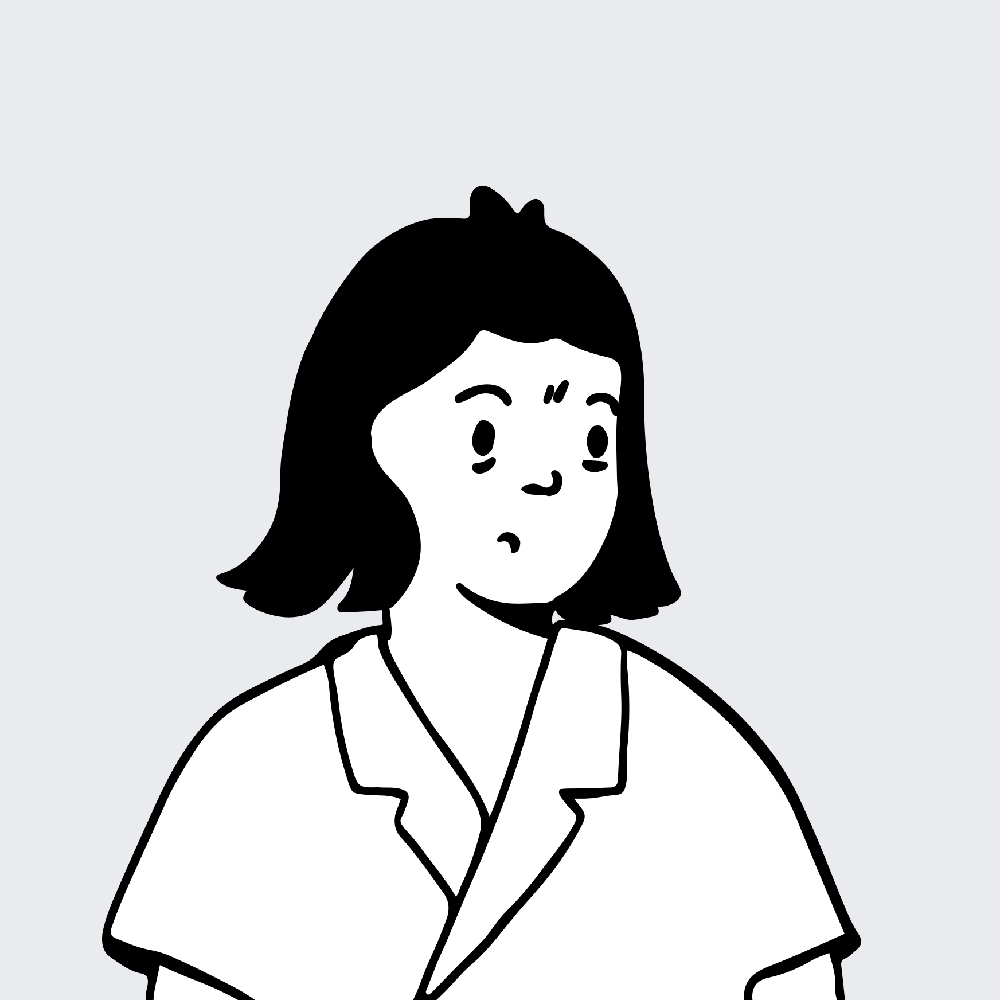
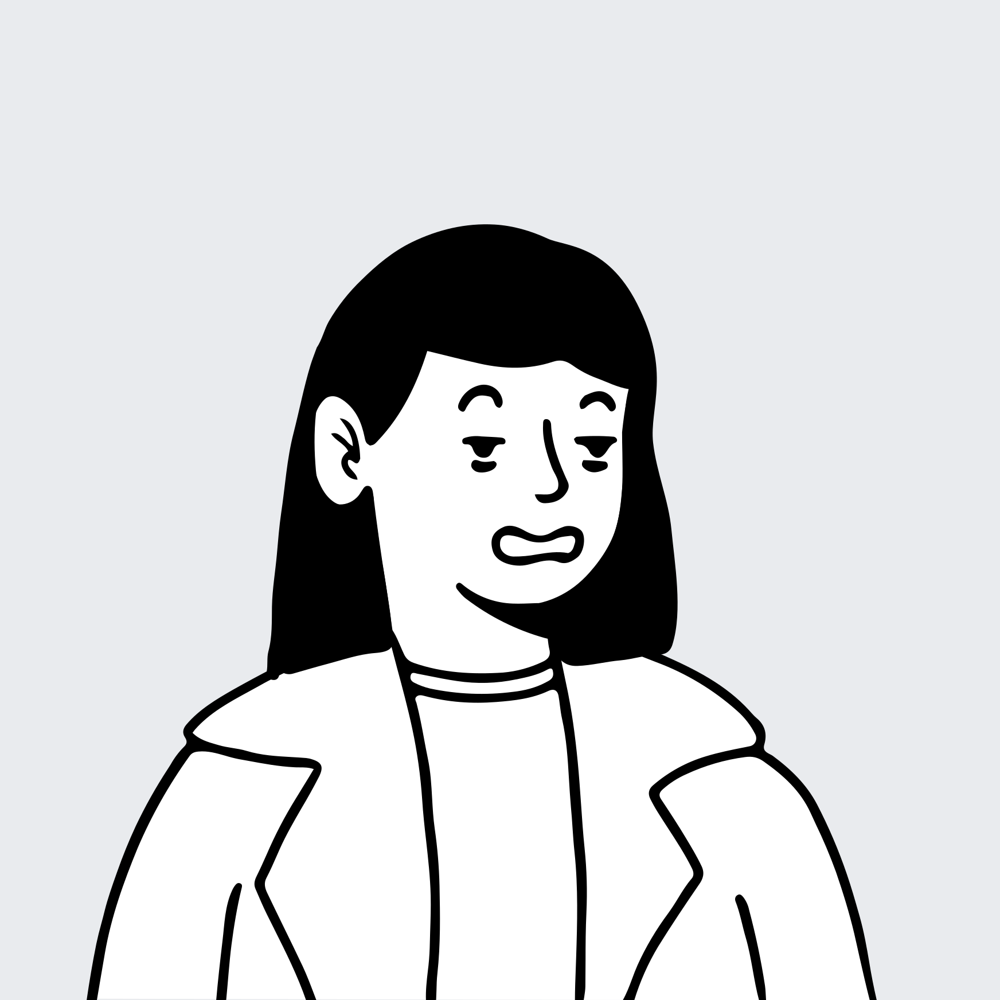
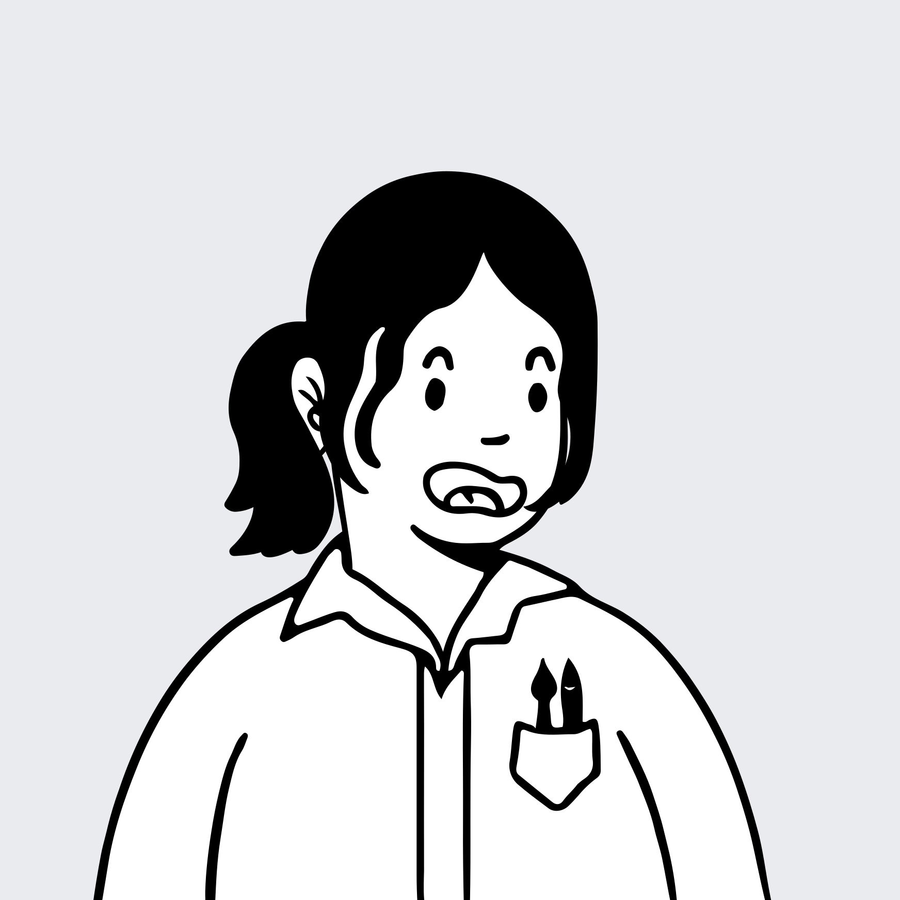
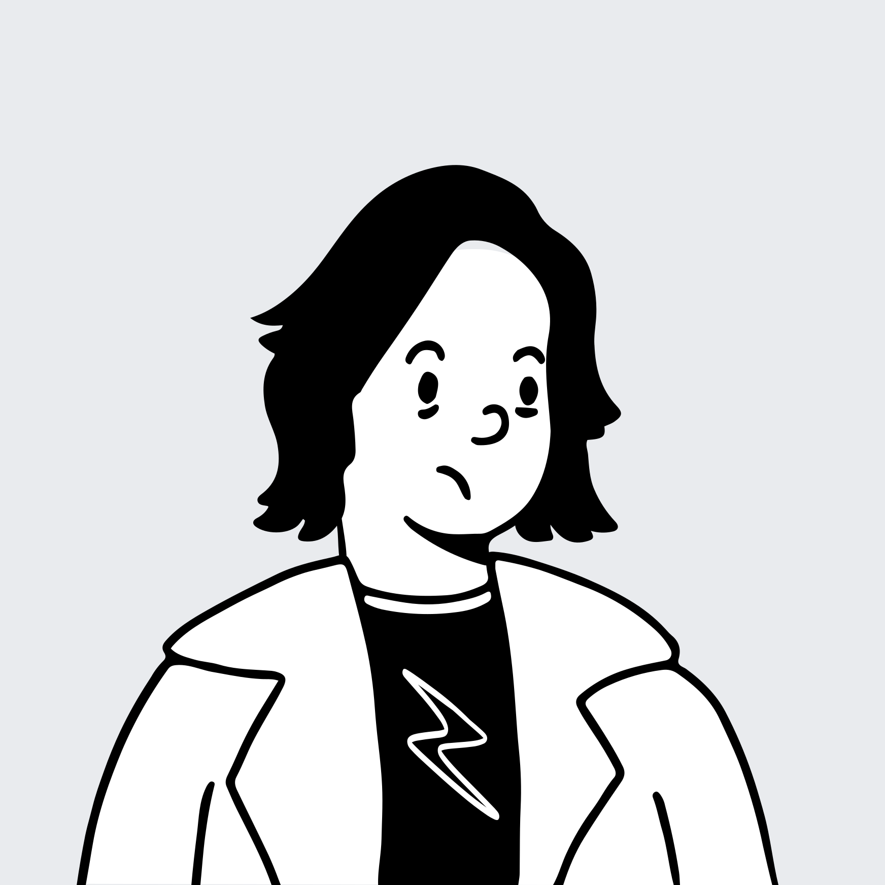
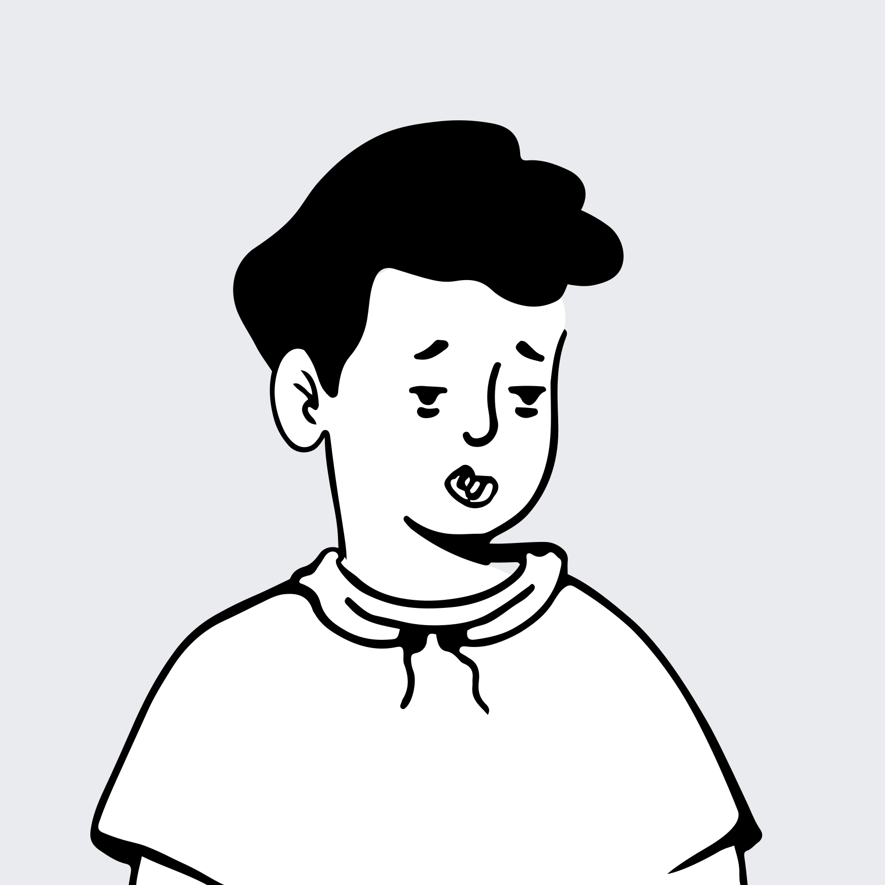
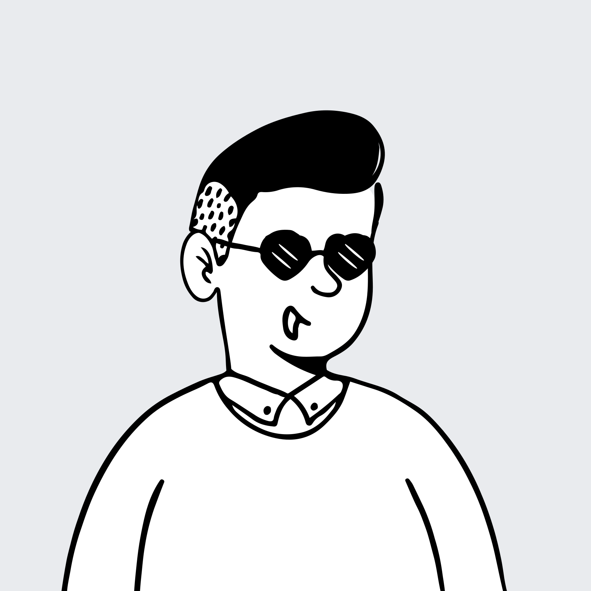
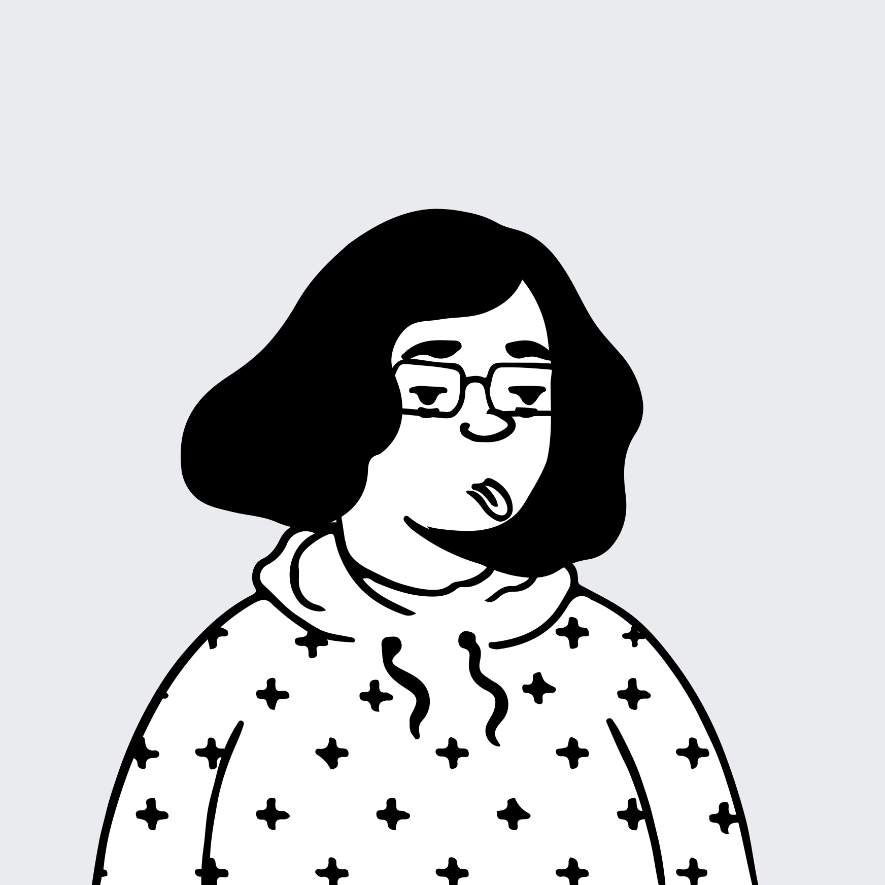
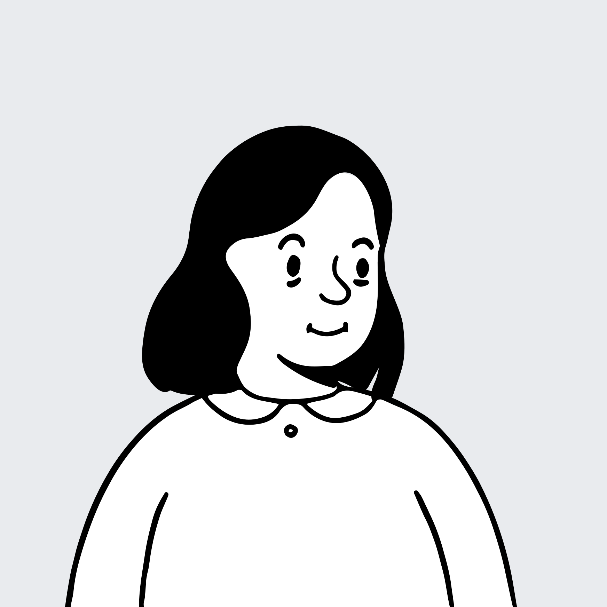
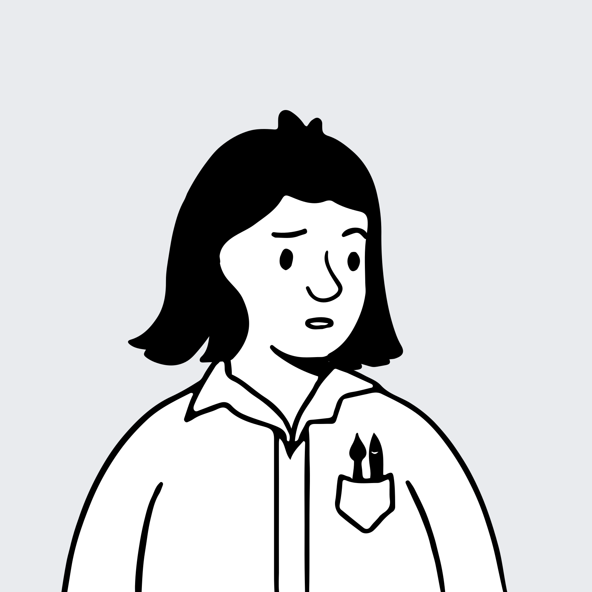

01
团队组建
课题方向、成员协同、阶段基线与开题活动安排。
03–06
课题方向、成员协同、阶段基线与开题活动安排。
从 UCD 分析方法与竞品分析的重要性，说明本课题的选择依据。
从设计师原声、分析旅程、柏拉图到重点问题下钻，定位影响效率、可采纳率与返工的关键原因。
将分析周期、首轮可采纳率与重大返工率转为可复测目标。
现有通用竞品分析 Skill 在不同领域的适配有限，真实设计课题仍需投入较多人工补充、核验与调整。
连接开发者、运维、云服务、企业业务与视觉体验研究，让竞品分析真正进入设计工作。
团队覆盖本课题已进入讨论和试运行的主要领域；每位成员以具体业务场景、研究输入或方法建设参与其中。

QCC 方法辅导与阶段把关

课题统筹、研究框架与推进

运维场景讨论与研究输入

无线任务链与验证标准

真实状态与机制可视化研究

研究对象、分析范围与汇报材料

角色、任务与权限边界研究

课题协同与研究支持

视觉基线、持续监测与规范关联
以已完成的运维、云服务、企业业务与视觉设计师讨论为依据：已开展的工作已有基础，尚未形成稳定机制的能力仍有提升空间；后续按试运行结果复盘校准。
用更完整的活动计划呈现本轮已完成和正在推进的工作；后续方案拟定、对策实施与成果标准化暂不展开。
BUPT 在产品分析中通过竞品对比寻找体验差异；五看三定将“看竞争”作为外部洞察的必经环节。竞品分析不是额外工作，而是方法的一部分。
从产品层进入竞品分析，理解现有解法、体验差异与可借鉴的设计切口。
看竞争是外部洞察的关键输入，支撑后续的目标、策略与控制点确定。
它先帮助设计师看见行业变化与用户问题，再对照不同产品如何解决同一类任务，最后沉淀为可复用的设计判断。
及时发现竞品的新产品、新体验和新做法。
用真实界面、任务状态和证据，判断哪些差异值得学习。
把一次课题中的发现沉淀为下一次设计工作的输入。
人工调试与调整占完整周期约 98%；同时，8 位设计师的首轮可采纳率平均仅 23%，重大返工率平均达 56%。
从原声中先抽取三项需要被改善和衡量的结果：完整分析周期、首轮生成关键结论可采纳率、重大返工率；P1–P6 用来解释这三项为何变差。
| 讨论对象 | 使用现状 | 常用竞品 / 材料 | 原声证据 | 主要痛点 |
|---|---|---|---|---|
| 智算运维 / 交互梁雪微 | 传统约 7 天；现有 Skill 尚未成功用于真实课题。 | Gartner、相似场景产品、团队知识库。 | “没有源链接，我会怀疑可信度；还要自己确认材料与可观测、运维状态、现有工作流有什么关联。” | 业务领域知识与上下文不足 |
| 计算运维 / 交互雷先维 | 传统 1–2 天；Skill 加调整约 6–7 小时。 | 官网、文档、代码、真实截图与交互视频。 | “反压、降 lane 隔离、快恢、拨测是不可见、抽象的系统行为，很难定位完全匹配的竞品场景。” | 抽象机制难对标 |
| 无线运维 / 交互王心宇 | 传统约 1 周；Skill 初稿 1–2 小时，调整后仍需 1–2 天。 | 直接竞品、替代方案、行业标杆、工单与 GIS 状态。 | “初稿很快，但还要反复调整。要沿着用户角色—工单—响应—GIS 变化—评价指标串起来，才知道机会在哪。” | 角色与任务链路缺失 |
| 云服务 / 交互陈旭令 | 小场景传统约 3 天；AI 竞品分析尚未成功。 | 云厂商官网与控制台、Gartner。 | “AI 竞品分析还没成功用于真实课题；研究官网就不要混进 Console，必须先限定对象、聚焦体验。” | 分析范围失焦 |
| 企业业务 / 交互季舒婷 | 传统约 2 天；Skill 后仍需实操，仅节省 0.5–1 天。 | Grammarly、邮箱及企业网络竞品。 | “同一款产品在不同岗位面前是不同的产品。要看到岗位、核心任务与权限边界，而不是整体 UX 评价。” | 角色与任务链路缺失 |
| 运维 / 视觉徐文静 | 全景与焦点分析并行；需要持续监测与定期梳理。 | 友商界面、历史设计文件与历次视觉基线。 | “每次分析都要和上一次视觉基线对比，讲清变化和原因，并沉淀成可筛选的竞品视觉档案。” | 分析资产未沉淀复用 |
设计师主导完整分析流程；角色任务、领域上下文与分析范围三项痛点，在范围定义与审阅调整两个高阻力阶段集中暴露。
角色与任务链路缺失、业务领域知识与上下文不足、分析范围失焦是本轮优先改善范围。
四项均在 80% 优先改善阈值内，可分别通过角色任务模板、领域知识库、范围约束与机制状态建模改善。
对象、边界与排除项没有预先锁定，导致搜集与判断持续漂移。
角色、核心任务、权限与任务链路未被结构化输入，难判断材料是否对应真实使用过程。
ToB 术语、机制与状态规则不足，Skill 难判断要找什么、怎样判断相似。
横轴按设计师主导的六个分析阶段展开。红色为直接造成痛点的核心 Skill 缺口，橙色为会放大痛点的连带不足。
目前已基于中大型功能场景数据已形成基线；后续以同口径在真实试点复测。
从接到分析问题到形成可讨论材料，包含范围确认、搜集、生成、核验、调整与成稿。
首轮生成后，经必要核验仍被保留并进入设计判断或评审的关键结论计为可采纳。
因范围错误、关键证据缺失或核心判断不成立，需要重定范围、重找证据或重做结构才计入。